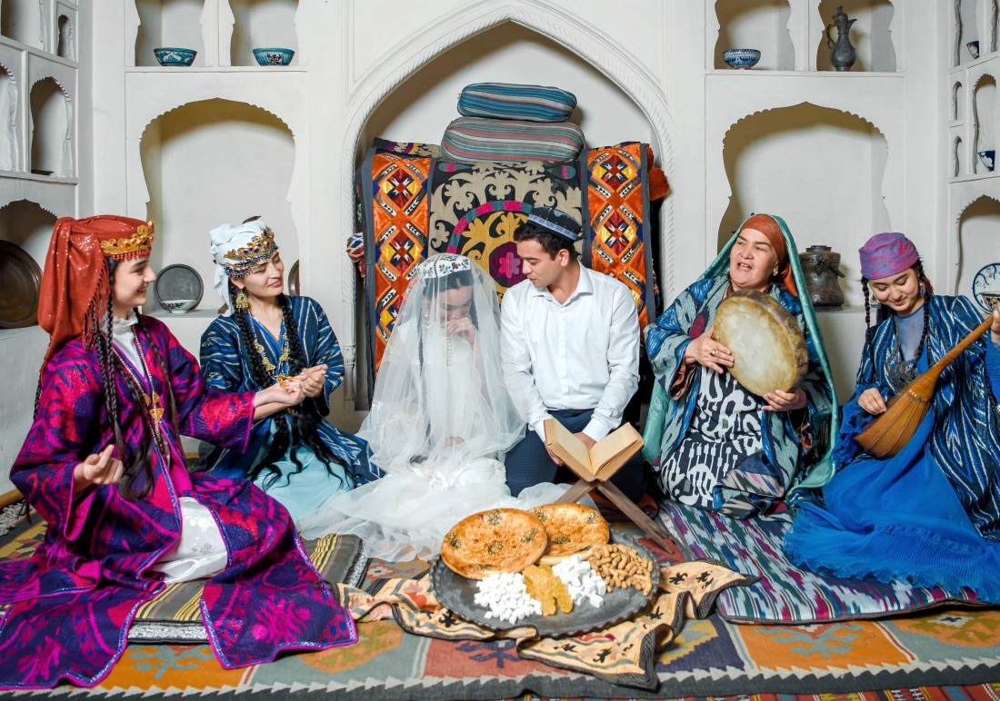

Традиции и обычаи

Фатиха-туй
В Узбекской культуре есть очень много интересных обычаев и обрядов. Среди них «Фатиха-туй» – день помолвки. По традиции,
Читать дальше...
День учителя и наставника
Большим уважением и почётом пользуются преподаватели и наставники в нашей стране. Каждый ученик, студент, стажёр считает своим
Читать дальше...
Праздник Навруз
Один из самых ярких и весёлых праздников – Навруз. Этому древнему празднику уже более 3000 лет и берёт свои истоки в зороастрийской
Читать дальше...
Ковун сайли
Начиная с древнейших времен, узбекская земля славится своими ароматными дынями. В средневековье, когда начинали созревать
Читать дальше...
Мехржон байрам
Выдающийся учёный-энциклопедист Абу Райхон аль-Беруний в своём труде «Памятники от древних народов» писал: «Как Солнце
Читать дальше...
Курбан Байрам
Курбан Байрам (Курбан Хайит) отмечается на десятый день священного месяца Зуль-Хиджа. По традиции на праздник принято приносить
Читать дальше...
Фатиха-туй
В Узбекской культуре есть очень много интересных обычаев и обрядов. Среди них «Фатиха-туй» – день помолвки. По традиции, семья жениха сама находит сыну невесту. Сначала о невесте все подробно узнают: где она выросла, кто ее родители, порядочна ли она. Если репутация выбранной невесты хорошая, то сваты со стороны жениха отправляются в гости к родителям невесты, чтобы познакомиться. В современном мире жених и невеста могут познакомиться сами до сватовства. Но обряд «Фатиха-туй» должен обязательно состояться, причем строго после одобрения родителей.